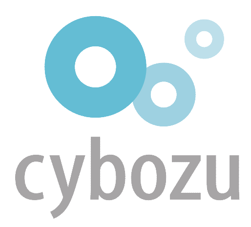
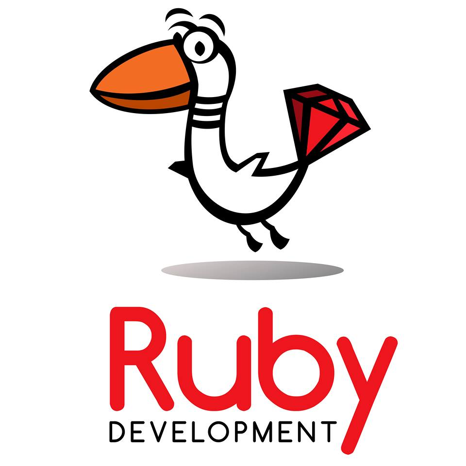

こんにちは世界！
Rails Girls が再び大阪にやってきます！二日間のワークショップの間に、Ruby on Railsのすてきな世界を体験してみませんか？ワークショップは無料です。
Hello world!
Rails Girls comes to Osaka! During the free two-day workshop we'll dive into the magical world of Ruby on Rails.
概要 コーチに教えてもらいながらプログラムを設計して、プロトタイプを作り、コーディングします。
必要なもの 自分のノートパソコン、やる気とキラリと光るイマジネーションを持ってきてください！
コーチの募集を締め切らせていただきました。 たくさんのご応募、ご協力、ありがとうございました。
| 19:00 - 21:00 |
インストール・デーご自分のノートパソコンをお持ちください。それぞれのパソコンにRubyとRailsをインストールし、Rubyプログラミングの最初の一歩をコーチとともに始めてみましょう。インストールできている方は、この日は参加しなくても大丈夫です。 |
|---|
| 9:00 - 10:00 |
レジストレーション |
|---|---|
| 10:00 - 10:30 |
オープニング |
| 10:30 - 11:00 |
座学 |
| 11:00 - 12:30 |
ワークショップ |
| 12:30 - 13:30 |
ランチ |
| 13:30 - 14:00 |
ライトニングトークス１ |
| 14:00 - 17:00 |
ワークショップ |
| 17:00 - 17:30 |
ライトニングトークス２ |
| 18:00 - 20:00 |
アフター・パーティ参加者、コーチ、スタッフによるパーティです。ワークショップで聞き損ねたことやRubyやRailsのこと、ステップアップの方法など、コーチに気軽に質問してみましょう。 |
参加申し込みは締め切らせていただきました。たくさんのご応募ありがとうございました。参加者のみなさまには随時ご連絡いたしますのでお待ちください。
会場:
サイボウズ大阪オフィス 地図
大阪府大阪市北区角田町8番1号 梅田阪急ビルオフィスタワー 35階
Rails Girls Osaka はすばらしいパートナーとの共同開催です。（順不同）

サイボウズ株式会社
「チームワークあふれる社会を創る」という理念のもと、チームワークを支えるクラウドサービス「cybozu.com」を開発、運用しています。データセンター構築からフロントエンド開発までを自社で手がけているのが大きな特徴です。モブプログラミングなどの新しい開発手法や、在宅勤務などの柔軟な働き方にもチャレンジしています。
Ruby開発は、Ruby on Railsをコア技術とし、クラウドを利用したアジャイル開発により、継続的な機能改善/追加を得意とします。Rubyコミュニティへの積極的な支援、Rubyエンジニアの育成にも積極的に取り組んでいます。
 株式会社エイチームは、インターネット・モバイル端末をベースとしたコンシューマー向けサービスを主軸に、ゲーム・デジタルコンテンツの「エンターテインメント事業」と日常生活に密着した比較サイトや情報サイトの「ライフスタイルサポート事業」の企画・開発・運営を行なうベンチャー企業です。
株式会社エイチームは、インターネット・モバイル端末をベースとしたコンシューマー向けサービスを主軸に、ゲーム・デジタルコンテンツの「エンターテインメント事業」と日常生活に密着した比較サイトや情報サイトの「ライフスタイルサポート事業」の企画・開発・運営を行なうベンチャー企業です。
 株式会社アジャイルウェアがとても重視しているのは、従業員満足度です。完全フレックス制や在宅ワークも導入しているため、仕事と学業や育児などのプライベートとの両立も可能です。一人一人が安心して働ける環境を整えることで、好きなことや得意なことに打ち込めるよう支援しています。天満橋駅から徒歩1分のオフィスは明るく、開放的な雰囲気です。
株式会社アジャイルウェアがとても重視しているのは、従業員満足度です。完全フレックス制や在宅ワークも導入しているため、仕事と学業や育児などのプライベートとの両立も可能です。一人一人が安心して働ける環境を整えることで、好きなことや得意なことに打ち込めるよう支援しています。天満橋駅から徒歩1分のオフィスは明るく、開放的な雰囲気です。
 日本Rubyの会は、Rubyの利用者の支援とRuby(とRubyのライブラリ)開発者の支援を目的とした一般社団法人です。現在は、ドキュメントの整備や、イベントへの参加協力等を中心に活動しています。
日本Rubyの会は、Rubyの利用者の支援とRuby(とRubyのライブラリ)開発者の支援を目的とした一般社団法人です。現在は、ドキュメントの整備や、イベントへの参加協力等を中心に活動しています。
参加費はどのくらいかかりますか？ 無料です。申し込むときにはわくわくした気持ちだけあればいいです。
どのような人が参加するのでしょうか？ パソコンを使ったことがある女性（identity as woman）ならだれでも参加できます。 これまでに開催されたRails Girlsイベントには様々な年齢の女性がやってきました。 もし、18才未満の方が参加される場合は、申し込み時にその旨お伝えください。
男性も参加できますか？ 参加できます。ただし、必ずウェブアプリを作りたがっている女性と一緒に参加してください。 申し込み人数が多い場合はお断りすることがありますので、ご了承ください。
プログラミングの経験があります。手伝うことはできますか？ はい！ただ、今回のコーチ、スタッフの募集については締め切らせていただきました。次回開催のときには、どうぞよろしくお願いいたします。
お問い合わせ
こちらの 主催者にお問い合わせからお問い合わせ下さい。